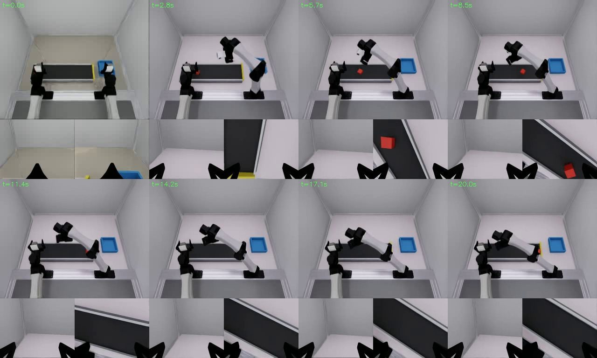
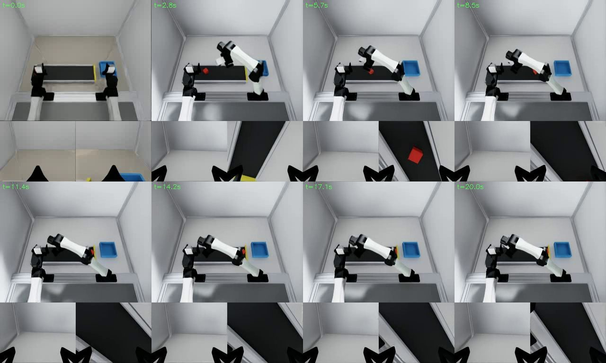
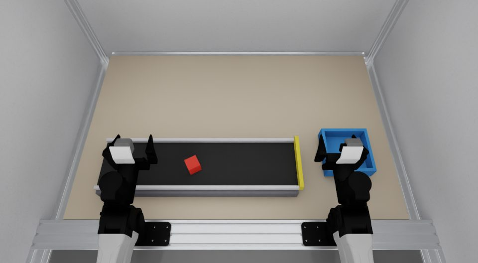
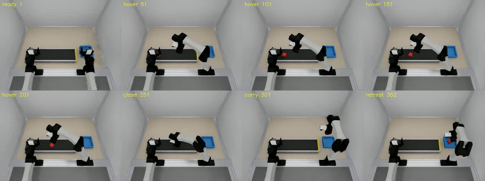
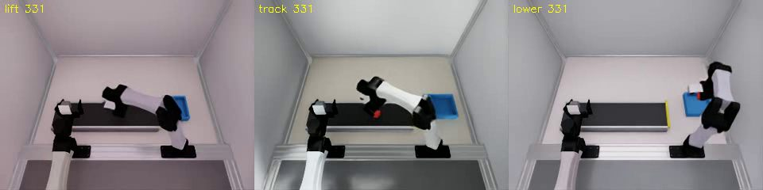
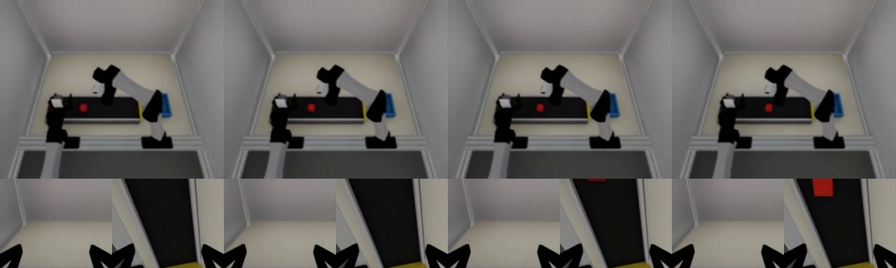
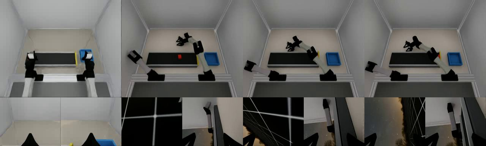
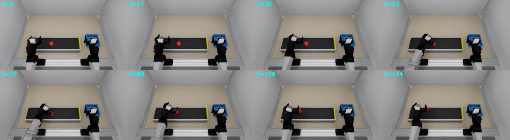

The workstation laptop simulates the task and records demonstrations. A Brev cloud box fine-tunes Long-WAM-YAM. A Jetson AGX Thor serves the policy while the laptop's simulator runs the closed-loop evaluation.
Closed-loop evaluation in the laptop's YAMLab sim against the policy served from the Thor: 10 episodes, 600 control steps (20 s) each, lighting and bin randomization on. Success requires lifting the cube off the belt and leaving it in the bin.
| Policy | Success | Left arm motion | Right arm | Right gripper closes |
|---|---|---|---|---|
| Pretrained Long-WAM-YAM | 0 / 10 | 1.68 rad (flails) | wanders | no (min 0.87) |
| Step 250 | 0 / 10 | 0.25 rad | holds the expert's hover pose | no (min 0.94) |
| Final, step 1,216 | 0 / 10 | 0.07 rad | hovers and follows the cube | no (min 0.92) |
| Demonstrations | — | 0 | descends onto the cube | yes (0.00) |
Fine-tuning moved the policy toward the demonstrations: the idle arm stays home and the working arm waits above the belt and follows the cube. It does not yet make the final dive and close the gripper, so no episode reaches the pick. Gripper values use the checkpoint's convention, where 1 is open.


Training ran on a Brev cloud instance; simulation, data generation and evaluation ran on the workstation laptop and the Jetson AGX Thor at no extra cost. The instance cannot be paused, so it billed from creation until it was deleted.
| Brev instance | Detail |
|---|---|
| Type | massedcompute_RTXPro6000x2 (shadeform) |
| Hardware | 2× RTX PRO 6000 Blackwell Server, 96 GB each · 30 vCPU · 283 GB RAM · 1.4 TB disk |
| Rate | $5.26 per hour, storage included |
| Lifetime | 5.21 h, created and deleted the same day |
| Phase | Time | Cost | Notes |
|---|---|---|---|
| Setup and debugging | 0.4 h | $2.10 | installs, model downloads, HF rate limit, NCCL shared-memory fix, smoke tests |
| Training | 3.3 h | $17.40 | 1,216 steps at ~9.7 s; skipping the unused video pass halved the step time |
| Checkpoint downloads | 1.5 h | $7.90 | 2 GB action deltas over a slow datacenter-to-home link, relayed via the laptop |
| Total | 5.21 h | $27.40 | instance deleted after the final checkpoint was safe |
Uploading checkpoints directly from the cloud box to Hugging Face would have removed most of the download time (about $8). A full fine-tune of both experts is estimated at 8–10 h on the same instance, about $45–55.
A 4 cm red cube rides the belt toward the right arm, which drops it in the blue bin. The belt is a static low-friction collider; each control step the env sets the cube's velocity while it lies on the belt and is not held.

Damped-least-squares IK on a fingertip tool point. A one-time calibration solves a ready pose and a pose over the bin; joint-space moves connect them. Only successful attempts are recorded.


Each sample is a 384×320 mosaic: the top camera above both wrist cameras. It covers 1.6 s of history (21 of 81 frames), the robot state, and the next 32 actions to predict.

The run starts from the full Long-WAM-YAM policy and trains only the 1.02 B action expert. The frozen video expert still imagines the future at σ 0.9, so the extra video-loss pass is skipped. That halves the step time to about 9.7 s.

LongLive2.0-Robot-S generated this from the start frame and the prompt “right gripper picks up the red cube from the conveyor belt and places it into the blue bin”, without FlashAttention (PyTorch SDPA fallback). The scene stays consistent and an arm grasps the cube, but the model chooses the arm on the image's left.
